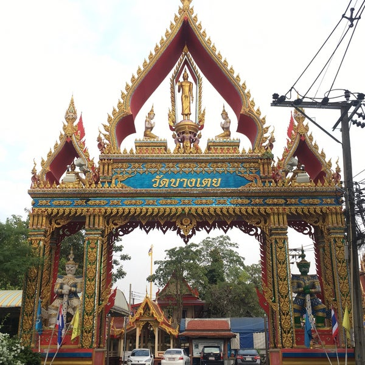

แนะนำวัดน่าเทียวในกรุงเทพมหานคร
วัดบางเตย

วัดบางเตย เป็นวัดพระพุทธศาสนาแบบเถรวาท สังกัดมหานิกาย ตั้งอยู่ในซอยนวมินทร์ 60 (วัดบางเตย) ถนนนวมินทร์ (สุขาภิบาล 1) แขวงคลองกุ่ม เขตบึงกุ่ม กรุงเทพมหานคร เป็นวัดที่เป็นศูนย์กลางของชุมชนย่านบึงกุ่ม โพธิ์แก้ว และนวมินทร์ เป็นวัดที่ส่งเสริมกิจกรรมทางพระพุทธศาสนาหลายด้าน เช่น การบวชปฏิบัติธรรม พระพุทธศาสนาวันอาทิตย์ และงานบริการชุมชนทางด้านต่าง ๆ ทางศาสนา เป็นต้น ที่วัดมีเสาหงส์ที่เป็นเอกลักษณ์และมีประวัติความเป็นมาในการก่อสร้างตั้งแต่ พ.ศ. 2475
วัดบางเตย ปรากฏหลักฐานว่า เมื่อประมาณ พ.ศ. 2371 (ต้นรัชกาลที่ 3) เมื่อพื้นที่ดังกล่าวมีชุมชนได้เข้ามาอยู่อาศัย และมีการตั้งวัดเป็นศูนย์รวมจิตใจ และปฏิบัติตามหลักศาสนา ดังปรากฏมีหลักฐานเป็น อุโบสถ (หลังเก่า) ทรงจีน ก่ออิฐถือปูน เสาไม้ หลังคามุงด้วยกระเบื้อง สี่เหลี่ยม มีขนาดเล็กจุคนได้ประมาณ 30 คน ซึ่งเป็นที่นิยมสร้างในสมัยรัชกาลที่ 3 จนกระทั่งมีการสลับสับเปลี่ยนเจ้าอาวาสไปตามช่วงเวลา และวัดก็มีพัฒนาการต่อเนื่องเป็นศูนย์กลางของชุมชนทางศาสนานับแต่อดีตจนกระทั่งปัจจุบัน
วัดศรีบุญเรือง

วัดศรีบุญเรือง เป็นวัดราษฎร์สังกัดคณะสงฆ์ฝ่ายมหานิกาย ตั้งอยู่ในแขวงหัวหมาก เขตบางกะปิ กรุงเทพมหานคร
วัดศรีบุญเรืองเดิมมีชื่อว่า วัดทำนบ สาเหตุที่ชื่อวัดนี้เนื่องมาจากในสมัยพระบาทสมเด็จพระนั่งเกล้าเจ้าอยู่หัว พระองค์โปรดเกล้าฯ ให้เจ้าพระยาบดินทรเดชา (สิงห์ สิงหเสนี) เป็นแม่ทัพหน้าร่วมกับสมเด็จเจ้าพระยาบรมมหาประยูรวงศ์ (ดิศ บุนนาค) เพื่อเข้าตีกรุงเวียงจันทน์ที่ก่อกบฏเมื่อ พ.ศ. 2371 ระหว่างเดินทัพออกจากพระนคร ได้มาหยุดตั้งทัพครั้งแรกที่บริเวณวัดนี้ และทหารได้รับคำสั่งให้ตั้งค่ายพักและบุกร้างถางพงตลอดจนขุดเป็นสำโหรกทำเป็นทำนบกั้นน้ำในคลองแสนแสบ เมื่อทัพเดินทางออกไป ชาวบ้านได้เข้ามาจับจองเป็นที่ทำกิน แล้วได้สร้างวัดเมื่อปี พ.ศ. 2373 นิมนต์พระสงฆ์ให้มาจำพรรษา จึงได้ตั้งชื่อว่า "วัดทำนบ" ตามสิ่งที่กองทหารได้สร้างไว้บริเวณหน้าวัด ขณะเดียวกันก็มีผู้เรียกชื่อวัดว่า วัดหัวไผ่ ตามชื่อของชุมชนที่อาศัยอยู่ติดกับวัดด้านทิศใต้ จนในปี พ.ศ. 2508 วัดได้รับพระราชทานวิสุงคามสีมาและได้รับชื่ออย่างเป็นทางการว่า "วัดศรีบุญเรือง"
วัดบึงทองหลาง

วัดบึงทองหลาง เป็นวัดสังกัดคณะสงฆ์มหานิกาย ตั้งอยู่ในแขวงคลองจั่น เขตบางกะปิ กรุงเทพมหานคร เป็นวัดที่มีอดีตเกจิคณาจารย์อย่างพระครูธรรมสมาจารย์ (พัก ธมฺมทตฺโต) ศิษย์สำนักวัดสุทัศนเทพวรารามราชวรมหาวิหาร โดยสมเด็จพระวันรัต (แดง สีลวฑฺฒโน) ในฐานะพระอุปัชฌาย์ และพระศรีสมโพธิ (แพ ติสสเทวมหาเถร {พ.ศ. 2399-2487} ที่ต่อมาได้รับการสถาปนาขึ้นเป็นสมเด็จพระสังฆราช เป็นพระกรรมวาจาจารย์ ได้ส่งพระภิกษุพัก ธมฺมทตฺโต ในขณะนั้น มาพัฒนา ปกครองดูแลวัดบึงทองหลางในอดีต และพระครูธรรมสมาจารย์ (พัก ธมฺมทตฺโต) ได้วางรากฐานและพัฒนาวัดบึงทองหลางให้มีความเจริญก้าวหน้า ดังเช่นปัจจุบัน
ตามประวัติวัดบึงทองหลางไม่ปรากฏหลักฐานในเชิงเอกสารอย่างชัดเจน เท่าที่พอสืบค้นได้พบว่าวัดบึงทองหลาง เป็นวัดที่อยู่ห่างไกลความเจริญและเป็นวัดที่อยู่ในถิ่นทุรกันดาร ตั้งอยู่บนที่ราบลุ่มน้ำท่วมถึงตลอดทั้งปี ใช้ทำประโยชน์อะไรไม่ได้เลย ต่อมามีพระภิกษุธุดงค์มาปักกลดอาศัยปฏิบัติธรรม ชาวบ้านจึงได้พากันมาทำบุญ ประหนึ่งเป็นจุดศูนย์รวมศรัทธา เมื่อมีพระธุดงค์สลับผ่านไปมาบ่อย ๆ ชาวบ้านจึงมาทำบุญและช่วยกันสร้างกุฏิสงฆ์ให้ท่านพักอยู่ โดยนายนิ่มและนางทองอยู่ เป็นผู้มอบถวายที่ดินให้สร้างเป็นสำนักสงฆ์ขึ้น เมื่อประมาณ พ.ศ. 2419 และชาวบ้านก็ได้ร่วมมือกันสร้างอุโบสถขึ้นมา เมื่อประมาณปี พ.ศ. 2430 พร้อมทั้งช่วยกันทำนุบำรุงรักษาวัดให้พัฒนาเจริญสืบมา
ทั้งนี้ยังมีสถานที่วัดอื่นๆอีกมากมายในกรุงเทพมหานคร ที่ยังรอให้ทุกๆคนไปกราบไหว้ นี้เป็นเพียงการแนะนำยกตัวอย่างสถานที่วัดในกรุงเทพ